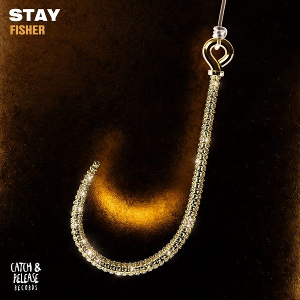

I 18 dischi e le top 6
 1
Don't Wake Me UpJAMES HYPE
1
Don't Wake Me UpJAMES HYPE

2 StayFISHER (OZ) 3
Remember MeDon Diablo & Qobra
3
Remember MeDon Diablo & Qobra
 4
Resonate VIPDillon Nathaniel
4
Resonate VIPDillon Nathaniel
 5
My Life ft. Swae Lee & PnB Rock (Laidback Luke Remix)Steve Aoki & David Guetta
5
My Life ft. Swae Lee & PnB Rock (Laidback Luke Remix)Steve Aoki & David Guetta
 6
WagwanAlbert Harvey
6
WagwanAlbert Harvey
 7
BOMBO BOMBORPBK
7
BOMBO BOMBORPBK
 8
Bad BitchGAWP, IDA fLO, Syncia
8
Bad BitchGAWP, IDA fLO, Syncia
 9
The RhythmAlex Preston
9
The RhythmAlex Preston
 10
NovacainePaul Oakenfold
10
NovacainePaul Oakenfold
 11
WitchcraftLEFTI
11
WitchcraftLEFTI
 12
U Must TryQubiko
12
U Must TryQubiko
 13
Remember MeMERCER & Provi
13
Remember MeMERCER & Provi
 14
Sola (CAVALLI Remix)Cavalli, Luca Testa, Nfasis, DAMANTE, Dj Human Star
14
Sola (CAVALLI Remix)Cavalli, Luca Testa, Nfasis, DAMANTE, Dj Human Star
 15
VolareTwo Cuzzos
15
VolareTwo Cuzzos
 16
We Run SoundMatsu
16
We Run SoundMatsu
 17
New StepsDavid Amo, Lito (ES)
17
New StepsDavid Amo, Lito (ES)
 18
My Love (Deep Fiktion Edit)Route 94
18
My Love (Deep Fiktion Edit)Route 94
La tracklist
- 1 Don't Wake Me Up JAMES HYPE Universal-Island Records
- 2 Stay FISHER (OZ) Catch & Release
- 3 Remember Me Don Diablo & Qobra Signatune
- 4 Resonate VIP Dillon Nathaniel Confession Records
- 5 My Life ft. Swae Lee & PnB Rock (Laidback Luke Remix) Steve Aoki & David Guetta Steve Aoki
- 6 Wagwan Albert Harvey What Ya Need
- 7 BOMBO BOMBO RPBK House Grooves Records
- 8 Bad Bitch GAWP, IDA fLO, Syncia Rawmance Records
- 9 The Rhythm Alex Preston Basement Sound
- 10 Novacaine Paul Oakenfold Perfecto Records
- 11 Witchcraft LEFTI Golden Recordings
- 12 U Must Try Qubiko Toolroom Records
- 13 Remember Me MERCER & Provi Black Jack Records
- 14 Sola (CAVALLI Remix) Cavalli, Luca Testa, Nfasis, DAMANTE, Dj Human Star Intercord
- 15 Volare Two Cuzzos Spinnin' Records
- 16 We Run Sound Matsu Wagyu Records
- 17 New Steps David Amo, Lito (ES) Strictly Records
- 18 My Love (Deep Fiktion Edit) Route 94 Rinse